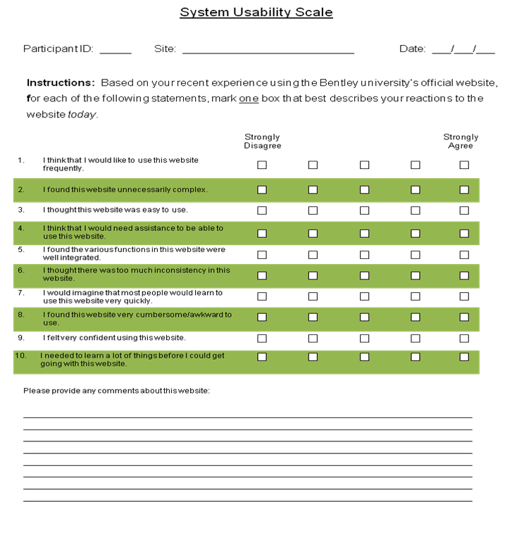

Usability Testing on Bentley.edu
Identifying user research proposal and conducting a usability test on the Bentley university's official website
This is the case of performing usability testing on the internationally recognized leading business school's official website https://www.bentley.edu/ The usability testing case is presented below:
User Research Proposal
Before performing a usability test, it is necessary to list out why it is important to conduct one and how the test result could help achieve the business goals. The research goals and the scope of testing is also decided in this section. Basically the research proposal is documented to analyse why it is necessary to spend time and money on performing the usability test and finally to get manageral sign-off to proceed with conducting the test. Below are listed the research proposal for performing usability test on the Bentley university's website:
- To improve the CIO organization values
- Improve the position of Bentley university in the top college ranking list (I refer to those done by magazines such as Forbes, as well as the newspapers and institutions that has world-wide reach)
- Increase student enrollment and student experience
- Attract and educate students world-wide thus accomplishing the strategic goal of achieving and maintaining student success
As a leading business school, it is important to make sure that all the prospective students around the globe, gets clear information and are made aware of the various courses, enrollments and other essential details about the university at hand.
By ensuring proper exhibit of all the necessary information, the overall times spend by the prospective students for decision making can be cut-down. Ease of awareness increases their interest that leads to desire of enrollment which in turn helps in branding of the institution as well. It is also important to create easy and clear awareness for better student experience prior enrollment.
U. S. News & World Report's latest edition of America's Best Colleges 2019 ranks Bentley University #3 in the Best Regional Universities-North category for the UG programs and the MBA program stands #7 in the New England region. By performing the usability testing, we will be able to assess ease of using the website and de-mystify the pain points where the student find it difficult to proceed or points they drops off. We could excel and keep up with all the requirements of the rankings by eliminating the possible user issues in the current official webpage.
Creating user-centric empathetic design, rectifying the current issues, makes the student decision making cycle easier, increasing the enrollments and retention, which in turn aids in improving the digital market, hence stepping ahead in achieving the university’s mission of attracting the best students world-wide.
With all the information available at hand, the number of calls for verbal enquiries and email enquiries can also be cut-down.
This particular usability test limits the scope to assess the ease of gathering the basic university information and concentrates on that part of the website which provides information regarding the ‘User Experience Certificate Program’. Following are the over-view of the critical features planned to be tested :
- Basic Information
- Location, directions and maps of university
- Lodging Facilities
- Credibility – Rankings and Recognitions, Student: Faculty ratio
- Courses Provided and majors available
- User Experience Certificate Program
- Basic course details
- Check courses and contents
- Schedules of the program
- Find out required courses, if any
- Duration and pace of completion of the certificate program
- Check on seat availability
- Browse faculty details
- Register for a particular course
- Check on the details and contents of the boot camp courses
- Check cancellation policy
- Find the UX Certificate Program point of contact details
User Experience is a hot field now and there are lots of prospective people out in the market who tries to break into the field by educating themselves from reputed schools.
This usability test ensures that the information related to the UX certificate courses provided by the Bentley University, are furnished in the website clearly and how easy the students find themselves in gathering information on each courses and the ease of comparing various courses and enrolling into those courses.
Apart from this, the basic university information that people look for beforehand viz., location, routes, credibility etc are also tested.
All the research goals of testing, right from the basic university details extending to the enrollment for a particular course, helps students world-wide to gather knowledge all from one source on the go, eliminating their effort in placing a call-in enquiry or email enquiry, waiting for the response at a later time from the university. This creates good pre-enrollment experience to the prospective students driving them to have the good first impression about the university.
It also helps the ease of comparison of various courses hence, reducing the decision making cycle aiding easier and faster enrollments. Larger enrollments of bright students, improves the branding and rankings of the college. It also ensures the proper abidance of the University’s CIO values.
Usability Test Plan
The test plan describes how goals identified in research proposal phase will be achieved. This phase includes the identification of potential candidates to perform the test, listing out the user goals and then deciding on formulating the requirements for the recruitment.
Then the recruitment screeners are designed based on the scope of the usability test, the user, user goals and recruitment criteria. The checklist for planning the usability study is prepared which consists of the activities to consider during the study. The particpant briefing and informed consent form are prepared and reviewed. Based on the scope of testing, the scenarios and tasks are jotted down clearly to present to the participant to perform during the test.
Then the test analysis plan is done where decisions are made on what to test and how to collect the test data. Post-test evaluation if needed are also considered in this phase. The test plan for our case is as listed below:
The potential candidates can be recruited for the usability testing by consulting the firm on their site users. Depending on the product/service there might be multiple potential user groups. A recruitment company can also be contacted providing the recruitment brief to find the right participants. The recruitment screeners could be used to shortlist the most appropriate candidates for the test.
In our case, the main site users can be any prospective candidate who can be a potential future student (someone who doesnt have used the site previously) for the university.
The main user goal would be to find the basic university information viz., location, directions, credibility and the main courses they provide. And furthermore, if they gets interested in any particular course, all the basic course information would be expected from the website viz., duration, start date, syllabus, registration, pricing and cancellation policies.
Considering the scope of this usability test, the candidates should posses the following criteria’s fulfilled to participate in the usability test:
- Must be someone who is interested in knowing about the university
- Can be someone who wishes to be a future student
- Better if s/he is not familiar with the university website
- Can be someone new to the field of UX so that they wish to explore about the UX certificate course
- Can be someone who looks for part-time courses in UX
- Must be someone who is ready to spend in between $1000 and $2000 for any course
(This recruitment screener is designed based on the scope of this usability test, the user, user goals and recruitment criteria. All the questions are expected to be answered however there are questions marked with ‘*’ which are the most important ones required to screen the candidates)
Screener Questionnare
1. Do you wish to undergo any university courses in the near future?*
Yes
No
No
May Be
2. Are you a current or ex-Bentley university student?*
Yes, please mention number of years of study _______________
No
Wish to be a future student
3. Which category do you fall into?
Student
Full-time employee
Part-time employee
Self-employed
Moon-lighter
4. Which mode do you prefer to register for any course at a university?*
Online
Call-in
In-person
5. How long has it been since you passed out of a school?*
I am currently a student
Less than a year
1 year to 5 years
5 years to 10 years
More than 10 years
6. Do you spend time exploring and browsing websites?*
Yes
No
Sometimes
Never, I hate it
Others, please specify ______________________________________________________________
7. How much can you spend for a course?
Under $500
$500 to $1000
$1000 to $2000
More then $2000
8. How much time can you spend to educate yourself for a course?
10 Hours a week
2-4 days a month
Flexible
Full-time fast track
Out the total 8 screener questions, 5 are required to answer and based on their response, we would proceed to gather their contact information and schedule test for them.
The checklist for planning the usability study is prepared which consists of the activities to consider during the study.
- Recruiting Participants
Plan the scope of usability testing
Identify potential users and user goals based on user research
Specify Recruitment criteria
Prepare recruiting screener
Confirmation and Schedule
- Planning the Test
Schedule meeting room
Set up testing environment including desktop and website setup
Set up recording and observing essentials
List of user tasks based on user research
Scenarios based on user tasks, business goals, and research questions
Get ready the pre- and post-study questions
Determine the criteria for measuring the success
- Pre-test actions
Participant Briefing
Ensure proper working of
Microphone
Camera
Screen-recording essentials
Have participant sign informed consent form
- During the test actions
Turn on recorders
Provide the scenario and then the tasks to the user
Proceed with note-taking and observing
Use acknowledgement tokens periodically
(Assists)What are you seeing here? What are you thinking now? Could you read the task again?
Remember how you started the task. You were getting close.
- Post-test actions
Give participants the post-test questionnaire to fill
Ask them their experience on using the website
Give participant payment
Have participant sign receipt for payment
Turn off recorder and save recording
- After completing the test session
Debrief all that observations, notes and records
Upload the video and save all the other documents at a common location
- Data Analysis Phase
Determine final list of positive findings, usability issues
Develop recommendations for improvement
Prepare summary of findings and recommendations
Present and distribute summary of findings and recommendations
Send thank you notes
The participant briefing includes, what is read to a participant prior to the study to make sure they know what to expect. Below is the one used in our case :
Welcome & Introduction
- I will be running this session with you today. First of all, thank you so much for agreeing to participate and for turning up today.
- If you don’t mind I am going to read the next couple of things from my script to make sure I cover everything
- I will give you a little briefing on what will be done and what is expected
About the test
- Here we will now be testing the Bentley University’s official website to find the ease with which prospective students can access information.
- We are asking you to serve as an evaluator of the website by completing a set of tasks.
- Our goal is to see how easy or difficult you find in using the site.
- I did not design the websites, so be open in specifying what you exactly feel like. You won’t hurt my feelings.
- The test would last from 30-40mins and you can take breaks in between, if you want
- If you have any questions, feel free to shoot it anytime
Review Informed Consent
- Before we start there are some paper works to be completed – Consent Form.
- We will be recording the session
- Recordings are used for research purposes only
- There may be some people watching
- Your name will not be associated with any data collected
- Your participation is voluntary and you have the right to stop at any time without penalty
My role
- Neutral observer taking notes
- I am not supposed to help you on the tasks but from time to time I may ask you to clarify what you have said or what made you do something
- Otherwise I will remain silent
Your role
- Be yourself, have fun – you can’t do anything wrong! So please feel free to let me know at any time if there’s something you like, dislike, if you’re confused, etc.
- Try to complete the tasks as if you were doing this at home
- It is the software we are testing, not you. Any difficulties you may have are because it wasn’t designed in a way that makes sense to you.
- I promise you won’t hurt my feelings.
- Be candid, you are helping others by shaping the product at an early stage
The tasks
- Read each task aloud
- Describe your steps, what you are looking for, give a “narration,” etc.
- Your comments are very important to us – we are equally interested in what you like and don’t like about the product. So please talk me through the steps you do
- You can ask for clarification if needed
- Spend as little or as much time as you normally would, when doing similar tasks
- Let me know when you have completed the task or have got stuck in the middle
- It is ok if you cannot complete each task, and we may not get to every task
- Once again, it is the software we are testing, not you
Any questions before we begin?
This is a written version of the participant briefing to make the participant sign to acknowledge they understand what to expect. Below is the one I have used for this study:
Date: 03/03/2019
Thank you for agreeing to participate in the efforts to make the Bentley University’s official website easier to learn and use. This Consent Agreement with us will describe the types of activities you may be participating in, the types of information we will be collecting during these activities, and how we will use this information.
Purpose: Bentley University’s technology teams is interested in learning more about the usability of its current official website, and re-engineer the pain points, if any.
Participation Methods: Your participation may include:
• Discussing your experience with the current university website in an interview format
• Testing the usability by performing specific tasks on the website
Information Collected: Two types of information will be collected:
• During discussions and interviews, we will record the information that you share, including a voice record. Your name will not be included on the audio tape, the questionnaire, or on the notes we take during the discussions and interviews.
• If you participate in usability tests of the current Bentley university website, the technical team will observe your screen activity as you perform tasks and record information about how you use the product and what you say about it, as you are using it. The technical team may also ask you to rate various aspects of the product’s usability using a numerical or other scale.
In addition, the technical team may electronically record your verbal statements and interactions with the product including the mouse and keyboard. We will inform you before we begin to record. Your name and other identifying information will not be included with these ratings, on the notes that we take during the test or with your verbal statements.
Your participation in this study is completely voluntary. You may withdraw from the study at any time without penalty.
If you have questions, you may ask them at any time before or during the study.
Please sign below to indicate your understanding and acceptance of this letter of understanding.
We appreciate your participation.
Print your Name _______________________________________________
Signature _______________________________________________
Below are the scenarios and tasks decided based on our test scope. It is printed out and handed over to the participant during the test.
Scenario: You are a techie who has just now switched into a project as a UX designer. As it is a new field, other than the area of your expertise, you decide to look for any courses available to educate yourself in UX. From your friend, you heard about Bentley University’s UX certification Program and so you are trying to explore the University’s official website to gather the details for the same.
Task 1: Find the location and directions of the university from your residence
Task 2: Check for any lodging facility details listed
Task 3: Check for the university’s credibility - Rankings and Recognitions
Task 4: Check the various course details for the User Experience Certificate Program (course names, schedules, description of each courses)
Task 5: Check for the duration of the certificate program
Task 6: Check for the faculty details
Task 7: Check for the course fee
Task 8: Check for the cancellation policy for certification program
Task 9: Check for the seat availability of each courses
Task 10: Check for the certification program POC contact details
In this phase, the test analysis plan is designed where decisions are made on what to test and how to collect the test data. Below is the analysis panfor our study:
The test session is intended for 30 minutes and we are expecting 5-6 tasks to be completed.
The following are planned to be recorded :
• Website screen in which the user performs the task.
• The participant himself/herself while performing the task
We will be interested in pointing out the parts of the tasks where the participants look satisfied or frustrated. The task we design will not be difficult and will be achievable in reasonable amount of time. If the user is not able to achieve the task in a reasonable amount of time, say 5 minutes, then we may ask him/her to move on to the next task and will note the task as ‘Not Completed’.
For each task, mainly we would measure the
• Task completion status
• Any occurrence of error/assists
• Time taken to complete each task
And finally a System Usability Scale (SUS) is used to find the overall experience of the user in performing the task on the website.
Based on the SUS evaluation, we would also have a conversation with the participant which includes:
• Overall impression of the website
• Likes about the site
• Dislike about the site
• Describe the site in a couple of sentence to a colleague or friend
A summary of the findings illustrating the key points and findings will then be created with screenshots of points indicating the pain points.
I have planned for a SUS evaluation questionnaire after the usability test. It helps to find how easy it is to use the website to achieve the user goal (tasks provided to the participant)
Moderation Sample Video
Usability Test Report
The text plan was designed with a total of 10 tasks and the session as meant to be lasting for a maximum of 40mins. Due to time constraint, we were able to test only 7 tasks.
Task-wise Findings
Task 1 : Find the location and directions of the university from your residence
To find directions, there was no option or link found from the page
Driving Directions were in written format
Comments from user : Oh Gosh! Lot to read
Recommendation : Link to Google map
Task 2 : Check for any lodging facility details listed
User had difficulty in finding the location and nearest lodging facility
Recommendation : Provide map to compare distance and direction from the university
Task 3 : Check for the university’s credibility - Rankings and Recognitions
For rankings and recognitions, user expected it to be in the ‘About Bentley’ page. So there was an error of navigating to the unintended pages by the user. The side bar was not visible enough to point out the ranks and recognition option.
Task 4 : Check the various course details for the User Experience Certificate Program (course names, schedules, description of each courses)
To find the UX course details, it was not possible to find the UX certification program page from the home page of the website. Hence the moderator had to manually navigate to the UX certificate home page before the task was accomplished. After proceeding to the page, it was easier to find the course details thereafter.
Task 5 : Check for the duration of the certificate program
Completion dates required lots of readings and took more time than expected resulting in task failure
Task 6 : Check for the faculty details
Faulty details were easy to find since it was right on the top primary navigation bar.
Task 7 : Check for the course fee
Course fees were difficult to find and the user was searching for 'Payments' tab
Summary of Completion, Errors/Assists, Time on Task
Overall Comments and Ratings
- The website required more reading to find information which the user found is hard to do.
- The navigation bar was changing for multiple pages resulting in confusion loosing the user making it hard to keep track of where they were in the site.
- The overall Site organization and information architecture missed many of the key information/terms which are frequently looked for.
SUS Rating by the user
Likes and dislikes of the participant
Following are the post SUS user conversation notes :
Liked Most : Overall website looks official with elegant color choices and clear fonts.
Liked Least : The website involves lot of readings. Information could be organized and visualized in a way so as to reduce the effort of reading enabling the user to spot required information with less effort and time.
Overall Recommendations
- Maps can be provided where ever possible for easy access
- Course details can be listed right at the home page for easy navigation
- Tables can be provided to display courses for each schedule
- Rankings can be provided at the home page itself so as to make aware the university’s credibility
- Information could be organized and visualized in a way so as to reduce the effort of reading enabling the user to spot required information with less effort and time